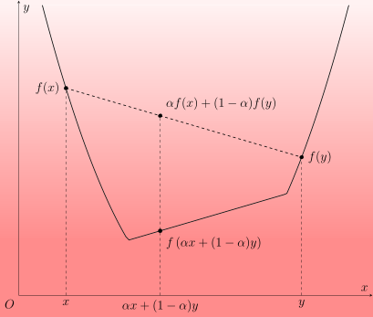
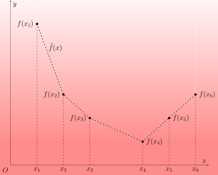
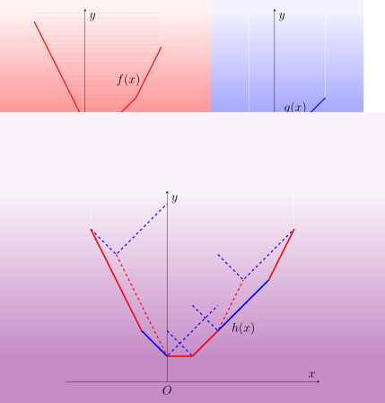
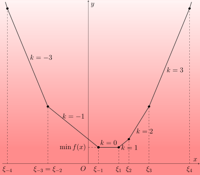

OI Wiki · prijevod · Dinamičko programiranjeOI Wiki · translation · Dynamic programming
Optimizacija Slope TrickSlope Trick optimization
Sadržaj
Uvod
Za jednu klasu dvodimenzionalnih DP problema, ako je funkcija vrijednosti \(f(i,x)\) za svaki fiksni \(i\) konveksna funkcija od \(x\), tada se cijela funkcija \(f(i,\cdot)\) može promatrati kao stanje u \(i\) i umjesto same funkcije održavati njezina diferencija (ili nagib)
što često optimizira prijelaze. Ta se ideja optimizacije DP-a naziva Slope Trick.
„Nagib”
Budući da funkcije u većini zadataka poprimaju vrijednosti samo u cjelobrojnim točkama, nema bitne razlike između naziva „diferencija” i „nagib”; u skladu s nazivom Slope Trick, ovaj ga tekst dosljedno zove nagib.
Način održavanja nagiba može se razlikovati od zadatka do zadatka. Ako je raspon vrijednosti nagiba uzak, zgodnije je održavati točke u kojima se nagib mijenja (tj. lomne točke); ako je pak domena funkcije uska, možda je zgodnije održavati sam niz nagiba. U složenijim situacijama može biti potrebno istodobno održavati i veličinu nagiba svakog segmenta i njegovu duljinu. Bez obzira na konkretan način održavanja, bit ovih problema jest iskoristiti činjenicu da se niz nagiba pri prijelazu stanja malo mijenja kako bi se prijelaz pojednostavnio. Stoga se svi oni mogu zvati Slope Trick.
Konveksne funkcije
Prije rasprave o konkretnim zadacima potrebno je najprije upoznati osnovna svojstva konveksnih funkcija te kako se njihov nagib mijenja pri raznim transformacijama konveksnih funkcija.
Konveksne funkcije na realnom pravcu
Općenitija definicija konveksne funkcije daje se na \(\mathbf R\).

Konveksna funkcija na \(\mathbf R\)
Ako funkcija \(f:\mathbf R\rightarrow\mathbf R\cup\{\pm\infty\}\) za sve \(x,y\in\mathbf R\) i \(\alpha\in(0,1)\) zadovoljava
kažemo da je \(f\) konveksna funkcija (convex function); pritom su pravila računanja s \(\pm\infty\) takva da \(\pm\infty\) pomnoženo bilo kojim pozitivnim realnim brojem ili uvećano za bilo koji realni broj ostaje \(\pm\infty\), a za svaki realni broj \(x\in\mathbf R\) vrijedi \(-\infty<x<+\infty\).
Naravno, zamijeni li se znak nejednakosti sa \(\ge\), funkcija se zove konkavnom1. Budući da je za konkavnu funkciju \(f\) funkcija \(-f\) uvijek konveksna, u ovom odjeljku razmatramo samo konveksne funkcije.
Ovaj tekst razmatra samo prave konveksne funkcije
Da bismo izbjegli raspravu o vrijednosti \(\infty-\infty\) i dodatnu složenu analizu, pri raspravi o pojmovima vezanim uz konveksne funkcije u ovom tekstu uvijek pretpostavljamo da funkcija ne poprima vrijednost \(-\infty\) i da nije identički jednaka \(+\infty\). Takve se konveksne funkcije zovu prave konveksne funkcije (proper convex function). To je dovoljno za razumijevanje sadržaja koji se javlja u algoritamskim natjecanjima.
Naravno, funkcija \(f\) često nije definirana za sve realne brojeve. Ako je domena funkcije \(f\) samo podskup od \(\mathbf R\), možemo je proširiti na funkciju na \(\mathbf R\):
Tada kažemo da je \(f\) konveksna ako i samo ako pripadna \(\tilde f\) zadovoljava gornju definiciju konveksne funkcije. Stoga, ako nije posebno naglašeno, domena konveksnih funkcija spomenutih u ovom tekstu uvijek je skup realnih brojeva \(\mathbf R\). Očito, konveksna funkcija \(f\) može poprimati konačne vrijednosti samo na jednom intervalu (tj. konveksnom podskupu od \(\mathbf R\)).
Jednostavni primjeri
Uobičajeni primjeri konveksnih funkcija su:
- konstantna funkcija: \(f(x)=c\), gdje je \(c\in\mathbf R\);
- linearna funkcija: \(f(x)=kx+b\), gdje su \(k,b\in\mathbf R\) i \(k\neq 0\);
- apsolutna vrijednost: \(f(x)=|x-a|\), gdje je \(a\in\mathbf R\);
- restrikcija bilo koje konveksne funkcije na neki interval, npr. \(0_{[a,b]}(x)\) (u kontekstu konveksne analize zove se i indikatorska funkcija intervala \([a,b]\)).
Naravno, pomoću transformacija koje čuvaju konveksnost, opisanih u nastavku, mogu se sastaviti složenije konveksne funkcije.
Konveksne funkcije na diskretnim skupovima točaka
U algoritamskim natjecanjima mnoge su funkcije definirane samo u nekim cjelobrojnim točkama. One općenito nisu konveksne funkcije (u gore definiranom smislu), jer im domena više nije konveksan skup. Da bismo obradili tu situaciju, konveksnost funkcija na diskretnim skupovima točaka treba definirati zasebno. Ukratko, funkciju najprije treba linearno interpolirati, čime se njezina domena proširuje na interval, a zatim ispitati njezinu konveksnost.

Konveksna funkcija na diskretnom skupu točaka
Neka je \(S\subset\mathbf R\) diskretan skup točaka, tj. za svaki zatvoreni interval \([a,b]\) skup \(S\cap[a,b]\) je konačan. Za funkciju \(f:S\rightarrow\mathbf R\cup\{\pm\infty\}\) možemo definirati funkciju \(\tilde f:\mathbf R\rightarrow\mathbf R\cup\{\pm\infty\}\) tako da:
- za \(x\in S\) vrijedi \(\tilde f(x)=f(x)\),
-
za \(x\in(\inf S,\sup S)\setminus S\), uz \(s_-=\max\{s\in S:s\le x\}\) i \(s_+=\min\{s\in S:s\ge x\}\), vrijedi
\[ \tilde f(x) = \dfrac{s_+-x}{s_+-s_-}f(s_-)+\dfrac{x-s_-}{s_+-s_-}f(s_+), \] -
za \(x\notin[\inf S,\sup S]\) vrijedi \(\tilde f(x)=+\infty\).
Ako je tada \(\tilde f(x)\) konveksna funkcija na \(\mathbf R\), kažemo da je \(f(x)\) konveksna funkcija na \(S\).
Budući da je s konveksnim funkcijama na \(\mathbf R\) lakše raditi, kad se u ovom tekstu spominju konveksne funkcije, ako nije posebno rečeno, misli se na konveksne funkcije na \(\mathbf R\). Ako su za neku funkciju u ovom tekstu zadane vrijednosti samo u nekim cjelobrojnim točkama, njezine vrijednosti u ostalim realnim točkama određene su funkcijom \(\tilde f\) iz definicije, što je isto kao da izravno razmatramo pripadnu po dijelovima linearnu funkciju \(\tilde f\).
Konveksne funkcije na skupu cijelih brojeva \(\mathbf Z\) imaju zorniju ekvivalentnu definiciju:
Ekvivalentna definicija konveksne funkcije na \(\mathbf Z\)
Funkcija \(f:\mathbf Z\rightarrow\mathbf R\cup\{\pm\infty\}\) je konveksna ako i samo ako
vrijedi za sve \(x\in\mathbf Z\).
Dokaz
Ova je tvrdnja jednostavna posljedica karakterizacije konveksnih funkcija nagibom.
Ako je \(f\) konveksna funkcija na \(\mathbf Z\), tada, budući da je nagib slabo rastući, vrijedi
To je upravo gornji uvjet.
Obratno, ako gornji uvjet vrijedi, tada za sve \(x_1<x_2\) imamo
To je aritmetička sredina svih diferencija za \(x_1\le i<x_2\). Poveća li se \(x_2\) za jedan, to odgovara umetanju jedne veće diferencije; poveća li se \(x_1\) za jedan, to odgovara uklanjanju najmanje diferencije. Obje operacije čine da sredina slabo raste. To pokazuje da nagib \(\Delta f(x_1,x_2)\) slabo raste, tj. da je \(f\) konveksna funkcija na \(\mathbf Z\).
Drugim riječima, čim je nagib (diferencija) monotono nepadajući, niz se može promatrati kao konveksna funkcija na \(\mathbf Z\).
Dvije karakterizacije konveksnih funkcija
Zapravo, karakterizacija konveksnih funkcija nagibom može se poopćiti na opći slučaj.
Karakterizacija konveksnih funkcija nagibom
Neka je \(S\) skup \(\mathbf R\) ili njegov diskretan podskup. Funkcija \(f:S\rightarrow\mathbf R\cup\{\pm\infty\}\) konveksna je ako i samo ako je nagib
za sve \(x_1,x_2\in S\) s \(x_1<x_2\) slabo rastuća funkcija od \(x_1\) i od \(x_2\).
Dokaz
Za funkciju \(f(x)\) na \(\mathbf R\) i \(x_1<x_2\), te za \(\alpha\in(0,1)\), neka je \(x_3=\alpha x_1+(1-\alpha)x_2\); tada je
ekvivalentno s
Obje su nejednakosti ekvivalentne s \(f(x_3)\le\alpha f(x_1)+(1-\alpha)f(x_2)\), tj. s konveksnošću funkcije \(f(x)\).
Za funkciju \(f(x)\) na diskretnom podskupu \(S\) od \(\mathbf R\), nužnost uvjeta slabog rasta nagiba slijedi iz konveksnosti \(\tilde f(x)\). Treba još dokazati dovoljnost, a za to je dovoljno pokazati da je i \(\Delta\tilde f(x_1,x_2)\) slabo rastući. Neka je \(S=\{s_i\}\), gdje je \(s_i\) strogo rastući po \(i\), te neka je \(s_{i_1}\le x_1\le s_{i_1+1}\) i \(s_{i_2}\le x_2\le s_{i_2+1}\); prirodno je \(i_1\le i_2\). Neka je \(\Delta_i=\Delta f(s_i,s_{i+1})\); tada se može dokazati \(\Delta_{i_1}\le\Delta\tilde f(x_1,x_2)\le\Delta_{i_2}\).
Razlikujemo dva slučaja. Ako je \(i_1=i_2\), tada je \(\Delta_{i_1}=\Delta\tilde f(x_1,x_2)=\Delta_{i_2}\) i nejednakost očito vrijedi. Inače je
Iz rasta nagiba na \(S\) slijedi da je \(\Delta_i\) rastući po \(i\), pa je \(\Delta_{i_1}\le\Delta\tilde f(x_1,x_2)\le\Delta_{i_2}\).
Pomoću tog zaključka, za \(x_1<x_2\) i \(\alpha\in(0,1)\) neka je \(x_3=\alpha x_1+(1-\alpha)x_2\) i odaberimo \(i_3\) tako da je \(s_{i_3}\le x_3\le s_{i_3+1}\); tada je
Uvrštavanjem izraza za \(x_3\) dobivamo konveksnost \(\tilde f(x)\).
Monotono nepadajući nagib može se smatrati ekvivalentnom definicijom konveksne funkcije. Upravo zato što nagib konveksne funkcije ima svojstvo monotonosti, pri održavanju nagiba obično se biraju strukture podataka poput hrpe (prioritetnog reda) ili balansiranog stabla.
U ovom će se tekstu koristiti i druga ekvivalentna karakterizacija konveksnih funkcija. Za funkciju \(f:\mathbf R\rightarrow\mathbf R\cup\{\pm\infty\}\) možemo promatrati područje ravnine iznad grafa funkcije, tj.
To se područje zove i epigraf (epigraph) funkcije \(f\). Konveksnost funkcije ekvivalentna je konveksnosti njezina epigrafa:
Karakterizacija konveksnih funkcija epigrafom
Funkcija \(f:\mathbf R\rightarrow\mathbf R\cup\{\pm\infty\}\) konveksna je ako i samo ako je \(\operatorname{epi}f\) konveksan skup u \(\mathbf R^2\).
Dokaz
Ako je \(f\) konveksna, tada za \((x_1,y_1),(x_2,y_2)\in\operatorname{epi}f\) i bilo koji \(\alpha\in(0,1)\) vrijedi
Dakle, \(\alpha(x_1,y_1)+(1-\alpha)(x_2,y_2)\in\operatorname{epi}f\).
Obratno, ako je \(\operatorname{epi}f\) konveksan skup, tada za sve \(x_1<x_2\) i \(\alpha\in(0,1)\) vrijedi
To je ekvivalentno s \(\alpha f(x_1)+(1-\alpha)f(x_2)\ge f\left(\alpha x_1+(1-\alpha)x_2\right)\), tj. s konveksnošću \(f\).
Kasnije ćemo vidjeti da se pomoću epigrafa infimalna konvolucija konveksnih funkcija može povezati sa sumom Minkowskog konveksnih skupova.
Transformacije konveksnih funkcija
U nastavku predstavljamo neke transformacije koje čuvaju konveksnost, a često se susreću u Slope Tricku.
Nenegativna linearna kombinacija
Za konveksne funkcije \(f\) i \(g\) te nenegativne realne brojeve \(\alpha,\beta\ge0\), funkcija \(\alpha f+\beta g\) također je konveksna. Štoviše,
Stoga, ako održavamo nagibe konveksnih funkcija \(f\) i \(g\), nagib njihove nenegativne linearne kombinacije \(\alpha f+\beta g\) dobivamo jednostavno računanjem segment po segment.
U problemima u kojima se održavaju nagibi često je jedna od funkcija jednostavna oblika pa se složenost izmjena može smanjiti lijenim oznakama (lazy tags). U problemima u kojima se održavaju lomne točke, za izračun lomnih točaka nagiba funkcije \(f+g\) dovoljno je spojiti lomne točke nagiba funkcija \(f\) i \(g\).
Infimalna konvolucija (suma Minkowskog)
Druga česta operacija nad konveksnim funkcijama jest infimalna konvolucija. Za funkcije \(f\) i \(g\) funkcija
zove se infimalna konvolucija2 (infimal convolution) funkcija \(f\) i \(g\). Ako su \(f\) i \(g\) konveksne, konveksna je i njihova infimalna konvolucija.

Objašnjenje slike
Kao na slici, da bismo dobili infimalnu konvoluciju \(h\) funkcija \(f\) i \(g\), svaku točku grafa funkcije \(f\) (crvena isprekidana crta na trećoj slici) možemo smatrati ishodištem i u pripadnom koordinatnom sustavu nacrtati graf funkcije \(g\) (plava isprekidana crta na trećoj slici). Kad se ishodište koordinatnog sustava pomiče po grafu funkcije \(f\), obris traga koji ostavlja graf (epigraf) funkcije \(g\) (tj. donja konveksna ljuska) upravo je graf funkcije \(h\). Vidi se da je svaki segment nagiba funkcije \(h\) ili segment nagiba funkcije \(f\) ili segment nagiba funkcije \(g\): samo su iznova poredani po veličini nagiba. Pritom se uloge \(f\) i \(g\) mogu zamijeniti, tj. pomičemo li graf funkcije \(f\) po grafu funkcije \(g\), rezultat je isti.
Geometrijski gledano, \(\operatorname{epi}h\) je upravo suma Minkowskog skupova \(\operatorname{epi}f\) i \(\operatorname{epi}g\). Ako su \(f\) i \(g\) po dijelovima linearne funkcije, tada je i \(h\) po dijelovima linearna, a njezini segmenti nagiba mogu se promatrati kao rezultat spajanja (i ponovnog sortiranja) segmenata nagiba funkcija \(f\) i \(g\).
Dokaz
Neka su \(f,g\) konveksne funkcije i \(h\) njihova infimalna konvolucija. Neka je \(x_1<x_2\) i \(\alpha\in(0,1)\). Prema definiciji infimalne konvolucije, za svaki \(\varepsilon>0\) postoje \(y_i,z_i\in\mathbf R\) takvi da je \(y_i+z_i=x_i\) i
Stoga, kombinirajući konveksnost \(f,g\) i definiciju \(h\), imamo
Budući da je \(\varepsilon>0\) odabran proizvoljno, vrijedi
Time je dobivena konveksnost \(h\).
Zatim, što se tiče geometrijske intuicije, strogo govoreći može se dokazati samo sljedeće:
Ovdje \(\operatorname{cl}\) označava zatvarač.
Za svaki \((x,y)\in\operatorname{epi} f + \operatorname{epi} g\) postoje \((x_1,y_1)\in\operatorname{epi} f\) i \((x_2,y_2)\in\operatorname{epi} g\) takvi da je \(x=x_1+x_2\) i
Stoga je \((x,y)\in\operatorname{epi}h\). To pokazuje \(\operatorname{epi} f + \operatorname{epi} g\subseteq \operatorname{epi}h\).
Obratno, za svaki \((x,y)\in\operatorname{epi}h\) vrijedi \(y\ge h(x)\). Prema definiciji \(h\), za svaki \(\varepsilon>0\) postoje \(x_1+x_2=x\) takvi da je
Neka je \(y_1=f(x_1)\) i \(y_2=g(x_2)\); tada je \(y+\varepsilon>y_1+y_2\). To pokazuje da za svaki \(\varepsilon>0\) postoji \((x_1,y_1)+(x_2,y_2)\in\operatorname{epi} f + \operatorname{epi} g\) koji leži na spojnici točaka \((x,y)\) i \((x,y+\varepsilon)\). Puštajući \(\varepsilon\rightarrow 0\) dobivamo \(\operatorname{epi}h \subseteq \operatorname{cl}(\operatorname{epi} f + \operatorname{epi} g)\).
Dakle, čim je \(\operatorname{epi} f + \operatorname{epi} g\) zatvoren skup, vrijedi \(\operatorname{epi} f + \operatorname{epi} g = \operatorname{epi}h\). Jedan uvjet koji to osigurava jest da su \(f\) i \(g\) prave konveksne funkcije i odozdo poluneprekidne. Za primjene u algoritamskim natjecanjima to je dovoljno; primjerice, po dijelovima linearne funkcije uvijek zadovoljavaju te uvjete.
U praktičnim zadacima, ako jedna od funkcija \(f\) i \(g\) ima malo segmenata nagiba, manji skup segmenata možemo izravno umetnuti u veći; inače može biti potrebno upotrijebiti heurističko spajanje ili spojive hrpe i slične metode kako bi se smanjila ukupna složenost spajanja, ili pronaći odgovarajući postupak ovisno o konkretnom zadatku.
Operacije minimuma i maksimuma
Maksimum dviju konveksnih funkcija opet je konveksna funkcija, ali minimum dviju konveksnih funkcija ne mora biti konveksan.
Mnoge se uobičajene operacije minimuma mogu svesti na infimalnu konvoluciju:
Primjeri
-
\(f(x)=\min_{y\in [x+a,x+b]}g(y)\) i dalje je konveksna funkcija, jer se može promatrati kao infimalna konvolucija:
\[ f(x) = \min_{y\in\mathbf R}g(y) + 0_{[-b,-a]}(x-y). \] -
\(f(x)=\min\{g(x-a_i)+b_i\}\) konveksna je funkcija na \(\mathbf Z\) čim je \(g(x)\) konveksna funkcija na \(\mathbf Z\), a funkcija \(h:a_i\mapsto b_i\) definirana na konačnom skupu \(\{a_i\}\subset\mathbf Z\) također je konveksna na tom diskretnom skupu. Naime, proširena funkcija \(\tilde f(x)\) može se promatrati kao infimalna konvolucija:
\[ \tilde f(x) = \min_{y\in\mathbf R}\tilde h(y)+\tilde g(x-y). \]Stoga je i funkcija \(f(x)\) prije proširenja konveksna.
No ne čuvaju sve operacije minimuma konveksnost.
Protuprimjer
Neka je \(g(x)\) konveksna funkcija; funkcija \(f(x)=\min\{g(x-1)+kx,g(x)\}\) ne mora biti konveksna.
U nekim posebnim zadacima, iako se jednadžba prijelaza dinamičkog programiranja može zapisati kao minimum dviju konveksnih funkcija i teško ju je svesti na oblik infimalne konvolucije, funkcija vrijednosti ipak ostaje konveksna. U praksi je za takve zadatke obično potrebno kombinirati ispisivanje tablica i pogađanje kako bi se pronašao razuman način prijelaza nagiba.
Nakon što smo upoznali konveksne funkcije i njihove uobičajene transformacije, metodu optimizacije DP-a Slope Trickom možemo razumjeti kroz konkretne zadatke. Primjeri u ovom tekstu grubo se dijele u dvije skupine, održavanje lomnih točaka i održavanje nagiba, kako bi se razumjele uobičajene operacije i detalji implementacije tih dvaju načina održavanja. No, kao što je ranije naglašeno, način održavanja nije bit Slope Tricka; prikladan način održavanja segmenata nagiba treba odabrati prema potrebama konkretnog zadatka.
Održavanje lomnih točaka
Ova se klasa problema obično javlja u zadacima u kojima treba minimizirati zbroj nekoliko apsolutnih vrijednosti. Budući da u tim zadacima apsolutna vrijednost nagiba funkcije vrijednosti nije velika, zgodnije je održavati lomne točke u kojima se nagib mijenja.
Održavanje lomnih točaka znači održavanje točaka po dijelovima linearne funkcije u kojima se nagib mijenja. To odgovara tome da za svaki segment nagiba \([l_i,r_i]\) s nagibom \(k_i\) održavamo samo podatke o krajevima, dok sam nagib ne treba dodatno održavati; stoga se u tim zadacima nagib pri svakoj promjeni mora promijeniti samo za fiksnu veličinu. Na primjer, ako održavamo skup lomnih točaka \(\xi_{-s}\le\cdots\le\xi_{-1}\le\xi_{1}\le\cdots\le\xi_{t}\), to znači: na intervalu \([\xi_{-1},\xi_1]\) nagib je \(0\); pri svakom prelasku lomne točke ulijevo nagib se smanjuje za jedan; pri svakom prelasku lomne točke udesno nagib se povećava za jedan; stoga je na intervalu \([\xi_2,\xi_3]\) nagib \(2\), na intervalu \([\xi_{-3},\xi_{-2}]\) nagib je \(-2\), i tako dalje. Formalno, funkcija se pomoću lomnih točaka nagiba može zapisati kao
Njezin je minimum \(f(\xi_{-1})=f(\xi_1)\) i postiže se u bilo kojoj točki intervala \([\xi_{-1},\xi_1]\).

Primjer: rastući niz najmanje cijene
[BalticOI 2004] Sequence
Zadan je niz \(\{a_i\}\) duljine \(n\). Pronađite strogo rastući niz \(\{b_i\}\) koji minimizira \(\sum_i|a_i-b_i|\); ispišite minimum i bilo koje optimalno rješenje \(\{b_i\}\).
Rješenje
Najprije, \(\{b_i\}\) je strogo rastući ako i samo ako je \(\{b'_i\}=\{b_i-i\}\) slabo rastući. Stoga za \(\{a'_i\}=\{a_i-i\}\) možemo pronaći slabo rastući niz \(\{b'_i\}=\{b_i-i\}\) s najmanjom razlikom i zatim ga vratiti u niz \(\{b_i\}\).
Razmotrimo naivno DP rješenje. Neka je \(f_i(x)\) najmanja razlika između odabranih brojeva i prvih \(i\) brojeva niza \(\{a'_i\}\) kad je odabrano prvih \(i\) brojeva niza \(\{b'_i\}\), a \(i\)-ti broj ne premašuje \(x\):
Lako se dobiva jednadžba prijelaza stanja
Početno stanje je \(f_0(x)\equiv 0\), a traži se \(\min_xf_n(x)\). Koristeći ranije spomenute transformacije konveksnih funkcija, od \(f_{i-1}(x)\) do \(f_i(x)\) dolazimo u dva koraka:
- Najprije dodamo \(|a'_i-x|\), što odgovara tome da svim segmentima nagiba na intervalu \((-\infty,a'_i]\) dodamo \(-1\), a svim segmentima nagiba na intervalu \([a'_i,+\infty)\) dodamo \(1\);
- Zatim dobivenoj funkciji uzmemo minimum, pretvarajući \(g(x)=f_{i-1}(x)+|a'_i-x|\) u \(f_i(x)=\min_{y\le x}g(y)\). Prema ranijoj analizi, to odgovara infimalnoj konvoluciji \(g(x)\) i \(0_{[0,+\infty)}\). Budući da potonja ima samo jedan segment nagiba, s nagibom \(0\) i beskonačno dugačak udesno, njegovo umetanje među segmente nagiba funkcije \(g(x)\) odgovara brisanju svih njezinih segmenata pozitivnog nagiba.
Nakon što smo razjasnili ove operacije, sve bismo segmente nagiba već mogli održavati balansiranim stablom, ali je kod složen. Uočimo da se u zadatku nagib pri svakoj promjeni mijenja za najviše \(1\), pa apsolutna vrijednost svakog nagiba ne premašuje \(n\). Zgodnije je ne održavati izravno segmente nagiba, nego lomne točke nagiba.
Neka je skup lomnih točaka funkcije \(f_{i-1}(x)\) jednak \(\xi_{-k}\le\cdots\le\xi_{-1}\le\xi_{1}\le\cdots\le\xi_{\ell}\). Tada gornja dva koraka redom odgovaraju:
- dodavanju jedne lomne točke \(a'_i\) segmenta negativnog nagiba i jedne lomne točke \(a'_i\) segmenta pozitivnog nagiba;
- izbacivanju svih lomnih točaka \(\xi_1,\cdots,\xi_{\ell}\) segmenata pozitivnog nagiba.
Pri stvarnom održavanju, budući da nakon svake operacije nema lomnih točaka segmenata pozitivnog nagiba, tj. lomne točke nagiba imaju oblik \(\xi_{-k}\le\cdots\le\xi_{-1}\), a operacije se uvijek događaju na granici segmenata pozitivnog i negativnog nagiba, dovoljno je izravno održavati max-hrpu sa svim lomnim točkama. Dva koraka redom odgovaraju:
- dvostrukom umetanju \(a'_i\);
- izbacivanju vrha hrpe.
Naravno, nakon svakog koraka treba održavati i minimum trenutne funkcije. Budući da nakon operacije nema segmenata pozitivnog nagiba, minimum funkcije je njezina vrijednost u vrhu max-hrpe. Neka je prije svake operacije vrh hrpe \(\xi_{-1}\), a minimum \(f_{i-1}(\xi_{-1})\). Budući da je izbačeni vrh hrpe najmanja lomna točka segmenata pozitivnog nagiba, minimum funkcije jednak je vrijednosti funkcije u toj točki, pa je dovoljno izravno izračunati vrijednost funkcije u vrhu hrpe prije izbacivanja, tj.
Pritom su prvi članovi jednaki jer \(f_{i-1}(x)\) nema segmenata pozitivnog nagiba. Stoga je svaki put dovoljno minimumu dodavati \(\max\{0,\xi_{-1}-a'_i\}\).
Zadatak traži i ispis jednog optimalnog rješenja. Budući da je po završetku posljednje operacije optimalno rješenje vrh hrpe, vrijednost \(b'_n\) može se izravno odrediti. Ako je poznato \(i\)-to optimalno rješenje \(b'_i\) i tražimo optimalno rješenje funkcije \(f_{i-1}(x)\) uz \(x\le b'_i\), dovoljno je primijetiti da je, zbog konveksnosti \(f_{i-1}(x)\), rješenje to bolje što je bliže njezinu globalnom minimumu; stoga je dovoljno zabilježiti točku globalnog minimuma funkcije \(f_{i-1}(x)\) i uzeti minimum nje i \(b'_i\) da bismo dobili optimalni \(b'_{i-1}\).
Vremenska složenost je \(O(n\log n)\).
#include <iostream>
#include <queue>
#include <vector>
int main() {
int n;
std::cin >> n;
std::vector<int> a(n), b(n);
for (int& x : a) std::cin >> x;
for (int i = 0; i < n; ++i) a[i] -= i;
long long res = 0;
std::priority_queue<int> max_heap;
for (int i = 0; i < n; ++i) {
max_heap.emplace(a[i]);
max_heap.emplace(a[i]);
res += max_heap.top() - a[i];
max_heap.pop();
b[i] = max_heap.top();
}
std::cout << res << '\n';
for (int i = n - 2; i >= 0; --i) b[i] = std::min(b[i], b[i + 1]);
for (int i = 0; i < n; ++i)
std::cout << (b[i] + i) << (i == n - 1 ? '\n' : ' ');
return 0;
}
Ogledni zadaci:
- Codeforces 713 C. Sonya and Problem Without a Legend
- Luogu P2893 [USACO08FEB] Making the Grade G
- Luogu P4331 [BalticOI 2004] Sequence
- Luogu P4597 Niz (sequence)
- AtCoder Dwango Programming Contest 2 Qualifiers E - Fireworks
Primjer: prijelazi s ograničenjima
[NOISG 2018 Finals] Safety
Zadan je niz \(\{a_i\}\) duljine \(n\). Pronađite niz \(\{b_i\}\) takav da vrijedi \(|b_i-b_{i-1}|\le h\) za sve \(1<i\le n\) i da je \(\sum_i|a_i-b_i|\) najmanji mogući; ispišite minimum.
Rješenje
Sadržaj je uglavnom sličan prethodnom zadatku, samo se promijenilo ograničenje na niz \(\{b_i\}\). Jednako tako, neka je \(f_i(x)\) najmanja razlika prvih \(i\) brojeva kad \(i\)-ti broj ima vrijednost \(x\):
Odatle je jednadžba prijelaza stanja
Početni uvjet je \(f_0(x)\equiv 0\). Na kraju i dalje tražimo \(\min_xf_n(x)\).
Prijelaz stanja rastavljamo na operacije nad konveksnim funkcijama, u dva koraka:
- Najprije od \(f_{i-1}(x)\) uzmemo minimum, dobivajući \(\min_{|y-x|\le h} f_{i-1}(y)\), što odgovara infimalnoj konvoluciji \(f_{i-1}(x)\) i \(0_{[-h,h]}(x)\);
- Zatim dobivenoj funkciji dodamo \(|a_i-x|\).
Budući da se i ovdje nagib svaki put mijenja za jedan, možemo razmotriti održavanje lomnih točaka. Tada se ova dva koraka opisuju kao:
- pomak svih segmenata negativnog nagiba ulijevo za \(h\) i svih segmenata pozitivnog nagiba udesno za \(h\);
- dvostruko umetanje \(a_i\).
Očito je za ovaj zadatak zgodno zasebno održavati segmente pozitivnog i negativnog nagiba. Budući da su operacije uglavnom koncentrirane oko segmenta nultog nagiba, razmotrimo par hrpa, tj. max-hrpom i min-hrpom zasebno održavamo lomne točke segmenata negativnog i pozitivnog nagiba. Pomak svih lomnih točaka izvodimo lijenom oznakom. U drugom koraku u svaku od dviju hrpa umećemo po jedan \(a_i\); nakon umetanja vrh max-hrpe ne mora više biti manji ili jednak vrhu min-hrpe. Tada zamjenjujemo vrhove hrpa dok odnos veličina vrhova ne bude zadovoljen.
Na kraju razmotrimo kako tijekom operacija ažurirati minimum. Budući da pomak u prvom koraku ne mijenja minimum, dovoljno je razmotriti operaciju zamjene vrhova hrpa. Neka je \(\xi_{-1}>\xi_1\); pri zamjeni vrhova \(\xi_{-1}\) i \(\xi_1\) funkcija se iz
mijenja u
Pritom se oblik funkcije ne mijenja, samo se pomiče prema dolje za \(|\xi_{-1}-\xi_1|\). Stoga, da bi funkcija prije i poslije zamjene vrhova ostala ista, dovoljno je minimumu dodati \(|\xi_{-1}-\xi_1|\).
Vremenska složenost algoritma i dalje je \(O(n\log n)\), jer se nakon svakog dodavanja elementa zamjena vrhova hrpa izvodi najviše jednom.
#include <iostream>
#include <queue>
#include <vector>
int main() {
int n;
long long h;
std::cin >> n >> h;
std::priority_queue<long long> max_heap;
std::priority_queue<long long, std::vector<long long>, std::greater<>>
min_heap;
long long lt = 0, rt = 0;
long long res = 0;
for (; n; --n) {
long long x;
std::cin >> x;
lt += h;
rt += h;
max_heap.emplace(x + lt);
min_heap.emplace(x - rt);
auto l = max_heap.top() - lt;
auto r = min_heap.top() + rt;
while (l > r) {
max_heap.pop();
min_heap.pop();
res += l - r;
max_heap.emplace(r + lt);
min_heap.emplace(l - rt);
l = max_heap.top() - lt;
r = min_heap.top() + rt;
}
}
std::cout << res << std::endl;
return 0;
}
Ogledni zadaci:
- Luogu P4272 [CTSC2009] Transformacija niza
- Luogu P11598 [NOISG 2018 Finals] Safety
- AtCoder Beginner Contest 217 H - Snuketoon
- AtCoder Regular Contest 070 E - NarrowRectangles
- AtCoder Regular Contest 123 D - Inc, Dec - Decomposition
Održavanje nagiba
Postoje i problemi u kojima je zgodnije održavati nagibe. Takvi se problemi obično mogu riješiti i greedyjem s odustajanjem ili idejom simuliranog toka s troškom. U modelu toka s troškom najmanji je trošak često konveksna funkcija toka, što daje temelj za primjenu Slope Tricka.
Primjer: trgovanje dionicama
Codeforces 865 D. Buy Low Sell High
Zadan je niz cijena dionice \(\{p_i\}\) kroz \(n\) dana (sve pozitivne). Na početku ne posjedujemo dionice; svaki dan možemo kupiti jednu dionicu, prodati jednu dionicu ili ne trgovati. Odredite najveću dobit nakon \(n\) dana.
Rješenje
Najprije razmotrimo naivno DP rješenje. Neka je \(f_i(x)\) najveća dobit na kraju \(i\)-tog dana ako posjedujemo \(x\ge 0\) dionica; tada je
Početno stanje je \(f_0(0)=0\) i \(f_0(x)=-\infty\) za sve \(x\neq 0\). Odgovor na zadatak je \(f_n(0)\).
Od \(f_{i-1}(x)\) do \(f_i(x)\) potrebne su dvije transformacije:
-
Napravimo supremalnu konvoluciju \(f_{i-1}(x)\) i po dijelovima linearne funkcije \(\tilde h_i(x)\) (očito konkavne) koja odgovara funkciji
\[ h_i(x) = \begin{cases}p_i,&x=-1,\\0,&x=0,\\-p_i,&x=1\end{cases} \] -
Budući da time funkcija dobiva konačne vrijednosti na intervalu \([-1,0)\), što proturječi zahtjevu \(x\ge 0\), treba odrezati dio funkcije na \([0,+\infty)\).
Pretvorene u promjene segmenata nagiba, to su sljedeća dva koraka:
- umetanje segmenta nagiba duljine \(2\) s nagibom \(-p_i\);
- brisanje, među segmentima konačnog nagiba, segmenta duljine \(1\) s najvećim nagibom.
Budući da su duljine segmenata nagiba uvijek prirodni brojevi, možemo održavati nekoliko segmenata nagiba duljine jedan, pa je dovoljno bilježiti nagib svakog segmenta. Budući da trebamo samo operacije umetanja i pristupa maksimumu, dovoljna je jedna max-hrpa. Operacija ima dva koraka:
- dvostruko umetanje \(-p_i\);
- izbacivanje vrha hrpe.
Treba održavati i vrijednost \(f_i(0)\). Budući da je vrijednost funkcije dobivene prvim korakom u \(x=-1\) jednaka \(f_{i-1}(0)+p_i\), njezina je vrijednost u \(x=0\) jednaka toj vrijednosti uvećanoj za vrh hrpe koji ćemo upravo izbaciti — on je nagib funkcije na intervalu \([-1,0]\). Budući da odsijecanje ne mijenja vrijednost funkcije u \(x=0\), to je upravo \(f_i(0)\).
Usporedbom implementacije ovog algoritma s kodom iz odjeljka Rastući niz najmanje cijene vidi se da je ovaj algoritam ekvivalentan računanju najmanje cijene pretvaranja niza cijena dionice u slabo padajući niz.
Vremenska složenost je \(O(n\log n)\).
#include <iostream>
#include <queue>
#include <vector>
int main() {
int n;
std::cin >> n;
std::vector<int> a(n);
for (int& x : a) std::cin >> x;
long long res = 0;
std::priority_queue<int> max_heap;
for (int x : a) {
max_heap.emplace(-x);
max_heap.emplace(-x);
res += x + max_heap.top();
max_heap.pop();
}
std::cout << res << '\n';
return 0;
}
Ogledni zadaci:
Primjer: prijevoz zemlje
[USACO16OPEN] Landscaping P
Zadani su nizovi \(\{a_i\}\) i \(\{b_i\}\) duljine \(n\) koji redom označavaju količinu zemlje koju \(i\)-ti vrt već ima i količinu koju treba imati (ni više ni manje). Kupnja jedne jedinice zemlje i stavljanje u bilo koji vrt stoji \(X\), odvoz jedne jedinice zemlje iz bilo kojeg vrta stoji \(Y\), a prijevoz jedne jedinice zemlje iz vrta \(i\) u vrt \(j\) stoji \(Z|i-j|\). Odredite najmanji trošak zadovoljavanja potreba svih vrtova. (\(a_i,b_i\le 10\))
Rješenje
Razmotrimo naivno DP rješenje. Neka je \(f_i(x)\) najmanji trošak zadovoljavanja potreba prvih \(i\) vrtova uz neto višak od \(x\) jedinica zemlje koje se prevoze u sljedeće vrtove. Ako je \(x<0\), to znači neto manjak od \(|x|\) jedinica zemlje koje treba dovesti iz sljedećih vrtova. Tada se jednadžba prijelaza stanja može zapisati kao
Ovdje funkcija \(h(\delta)\) označava trošak kad je neto kupljena količina zemlje za trenutni vrt jednaka \(\delta\), tj.
Ona je očito konveksna. Značenje ove jednadžbe prijelaza stanja je sljedeće:
- kad je neto višak zemlje prethodnih \(i-1\) vrtova jednak \(y\), najmanji trošak je \(f_{i-1}(y)\);
- trošak prijevoza neto viška (manjka) zemlje između \(i\) i \(i-1\) je \(|y|Z\);
- najmanji trošak da se kupnjom i prodajom količina zemlje u \(i\)-tom vrtu prilagodi s \(a_i\) na \(b_i\), a neto višak zemlje s \(y\) na \(x\), iznosi \(h((x-y)+(b_i-a_i))\).
Početno stanje je \(f_0(0)=0\) i \(f_0(x)=+\infty\) za sve \(x\neq 0\). Odgovor na zadatak je \(f_n(0)\).
Transformacija funkcije \(f_{i-1}(x)\) u \(f_i(x)\) može se podijeliti u tri koraka:
- Najprije dodamo \(|x|Z\) i dobijemo \(f_{i-1}(x)+|x|Z\);
- Zatim napravimo infimalnu konvoluciju s \(h(x)\) i dobijemo \(\min_{y\in\mathbf R}f_{i-1}(y)+|y|Z+h(x-y)\);
- Na kraju funkciju pomaknemo ulijevo za \((b_i-a_i)\) jedinica.
Pretvoreno u operacije nad segmentima nagiba, također u tri koraka:
- svim segmentima nagiba lijevo od ishodišta dodamo \(-Z\), a svim segmentima nagiba desno od ishodišta dodamo \(Z\);
- sve segmente nagiba manjeg od \(-Y\) zamijenimo s \(-Y\), a sve segmente nagiba većeg od \(X\) zamijenimo s \(X\);
- sve segmente nagiba pomaknemo ulijevo za \((b_i-a_i)\) jedinica.
U izvornom su zadatku \(a_i\) i \(b_i\) vrlo mali, pa je dovoljno održavati nekoliko segmenata nagiba duljine \(1\). Iako segmenata nagiba ima beskonačno mnogo, postoje gornja granica \(X\) i donja granica \(-Y\), a broj segmenata nagiba strogo između njih nije velik. Budući da nema operacija umetanja, segmente nagiba s obje strane ishodišta možemo održavati dvama stogovima, a operacije dodavanja na intervalu i minimuma/maksimuma na intervalu izvodimo lijenim oznakama. Gornja tri koraka redom odgovaraju:
- postavljanju lijene oznake na lijevi i desni stog: lijevom dodajemo \(-Z\), desnom \(Z\);
- pri svakom izbacivanju elementa sa stoga uzimamo maksimum s \(-Y\) i minimum s \(X\). Ako je lijevi stog prazan, izbacujemo \(-Y\). Ako je desni stog prazan, izbacujemo \(X\);
- izbacivanju \((b_i-a_i)\) elemenata s vrha lijevog stoga i njihovu umetanju u desni stog; naravno, za \(b_i-a_i<0\) obrnuto.
Pri premještanju vrhova stogova ažuriramo odgovor: pri pomaku ulijevo oduzimamo trenutni nagib, a pri pomaku udesno dodajemo trenutni nagib.
Složenost algoritma je \(O(n\max\{a_i,b_i\})\).
#include <iostream>
#include <stack>
int main() {
int n;
long long x, y, z;
std::cin >> n >> x >> y >> z;
std::stack<long long> neg, pos;
long long lt = 0, rt = 0;
long long res = 0;
for (; n; --n) {
int a, b;
std::cin >> a >> b;
lt -= z;
rt += z;
for (; b < a; ++b) {
auto l = -y;
if (!neg.empty()) {
l = std::max(l, neg.top() + lt);
neg.pop();
}
pos.emplace(l - rt);
res -= l;
}
for (; b > a; --b) {
auto r = x;
if (!pos.empty()) {
r = std::min(r, pos.top() + rt);
pos.pop();
}
neg.emplace(r - lt);
res += r;
}
}
std::cout << res << std::endl;
return 0;
}
Ogledni zadaci:
- Luogu P2748 [USACO16OPEN] Landscaping P
- Kyoto University PC 2016 H - WAAAAAAAAAAAAALL
- JAG Practice Contest 2017 J - Farm Village
Zadaci
Na kraju ovog teksta navodimo nekoliko zadataka s raznih algoritamskih natjecanja koji se mogu riješiti Slope Trickom, za vježbu.
- Luogu P3642 [APIO2016] Vatromet
- Luogu P9962 [THUPC 2024 kvalifikacije] Jedno stablo
- Luogu P11317 [RMI 2021] Paths
- AtCoder Beginner Contest 383 G - Bar Cover
- Codeforces 280 D. k-Maximum Subsequence Sum
- Codeforces 280 E. Sequence Transformation
- Codeforces 802 O. April Fools' Problem (hard)
- Codeforces 1209 H. Moving Walkways
- Codeforces 1229 F. Mateusz and Escape Room
- Codeforces 1534 G. A New Beginning
- Codeforces 1787 H. Codeforces Scoreboard
- 2019 Summer Petrozavodsk Camp H. Honorable Mention
- 2018 ACM-ICPC World Finals C. Conquer The World
- 300iq Contest 3 F. Farm of Monsters
Literatura i bilješke
Contents
Introduction
For a class of two-dimensional DP problems, if the value function \(f(i,x)\) is a convex function of \(x\) for every fixed \(i\), then the whole function \(f(i,\cdot)\) can be viewed as the state at \(i\), and maintaining its difference (or slope)
instead of the function itself often optimizes the transitions. This idea of optimizing DP is called Slope Trick.
\"Slope\"
Since the functions involved in most problems take values only at integer points, there is no essential difference between calling it the difference or the slope; following the term Slope Trick, this article consistently calls it the slope.
In concrete problems the slope may be maintained in different ways. If the range of the slope values is narrow, it is more convenient to maintain the points where the slope changes (i.e. the kinks); if the domain of the function is narrow, it may be more convenient to maintain the slope sequence itself. In more complex situations, it may be necessary to maintain both the slope of each segment and the length of that segment. Whatever the concrete way of maintenance, the essence of these problems is to use the fact that the slope sequence changes little during state transitions to simplify the transitions. Therefore they can all be called Slope Trick.
Convex functions
Before discussing concrete problems, it is necessary to first understand the basic properties of convex functions and how their slopes change under various transformations of convex functions.
Convex functions on the real line
The more general definition of a convex function is given on \(\mathbf R\).
Convex function on \(\mathbf R\)
If a function \(f:\mathbf R\rightarrow\mathbf R\cup\{\pm\infty\}\) satisfies, for all \(x,y\in\mathbf R\) and \(\alpha\in(0,1)\),
then \(f\) is called a convex function; here the arithmetic rules for \(\pm\infty\) are that \(\pm\infty\) multiplied by any positive real number or plus any real number equals itself, and that \(-\infty<x<+\infty\) for every real number \(x\in\mathbf R\).
Of course, if the inequality sign is replaced by \(\ge\), the function is correspondingly called concave1. Since for a concave function \(f\), \(-f\) is always convex, this section only considers convex functions.
This article only considers proper convex functions
To avoid discussing the value of \(\infty-\infty\) and additional complicated analysis, when discussing concepts related to convex functions this article always assumes that the function never takes the value \(-\infty\) and is not identically \(+\infty\). Such convex functions are called proper convex functions. This is sufficient for understanding the content involved in competitive programming.
Of course, a function \(f\) is often not defined for all real numbers. If the domain of \(f\) is only a subset of \(\mathbf R\), it can be extended to a function on \(\mathbf R\):
Then \(f\) is called convex if and only if the corresponding \(\tilde f\) satisfies the definition of a convex function above. Therefore, unless stated otherwise, the domain of the convex functions mentioned in this article is always the set of real numbers \(\mathbf R\). Clearly, a convex function \(f\) can take finite values only on an interval (i.e. a convex subset of \(\mathbf R\)).
Simple examples
Common examples of convex functions include:
- constant functions: \(f(x)=c\), where \(c\in\mathbf R\);
- linear functions: \(f(x)=kx+b\), where \(k,b\in\mathbf R\) and \(k\neq 0\);
- the absolute value function: \(f(x)=|x-a|\), where \(a\in\mathbf R\);
- the restriction of any convex function to some interval, e.g. \(0_{[a,b]}(x)\) (in the context of convex analysis also called the indicator function of \([a,b]\)).
Of course, more complex convex functions can be composed using the convexity-preserving transformations mentioned below.
Convex functions on discrete point sets
In competitive programming, many functions are defined only at some integer values. In general they are not convex functions (as defined above), because their domain is no longer a convex set. To handle this situation, the convexity of functions on discrete point sets has to be defined separately. In short, the function first has to be linearly interpolated, extending its domain to an interval, and then its convexity is examined.
Convex function on a discrete point set
Let \(S\subset\mathbf R\) be a discrete point set, i.e. for every closed interval \([a,b]\) the set \(S\cap[a,b]\) is finite. For a function \(f:S\rightarrow\mathbf R\cup\{\pm\infty\}\), define the function \(\tilde f:\mathbf R\rightarrow\mathbf R\cup\{\pm\infty\}\) such that:
- for \(x\in S\), \(\tilde f(x)=f(x)\),
-
for \(x\in(\inf S,\sup S)\setminus S\), with \(s_-=\max\{s\in S:s\le x\}\) and \(s_+=\min\{s\in S:s\ge x\}\),
\[ \tilde f(x) = \dfrac{s_+-x}{s_+-s_-}f(s_-)+\dfrac{x-s_-}{s_+-s_-}f(s_+), \] -
for \(x\notin[\inf S,\sup S]\), \(\tilde f(x)=+\infty\).
Then, if \(\tilde f(x)\) is a convex function on \(\mathbf R\), \(f(x)\) is called a convex function on \(S\).
Since convex functions on \(\mathbf R\) are more convenient to handle, when this article mentions convex functions it means, unless stated otherwise, convex functions on \(\mathbf R\). If a function in this article is given only by its values at some integer points, its values at the other real numbers are determined by the \(\tilde f\) in the definition, which amounts to directly discussing the corresponding piecewise linear function \(\tilde f\).
Convex functions on the integers \(\mathbf Z\) have a more intuitive equivalent definition:
Equivalent definition of a convex function on \(\mathbf Z\)
A function \(f:\mathbf Z\rightarrow\mathbf R\cup\{\pm\infty\}\) is convex if and only if
holds for all \(x\in\mathbf Z\).
Proof
This statement is a simple corollary of the slope characterization of convex functions.
If \(f\) is a convex function on \(\mathbf Z\), then, since the slope is weakly increasing,
This is exactly the condition above.
Conversely, if the condition above holds, then for any \(x_1<x_2\),
This is the arithmetic mean of all differences with \(x_1\le i<x_2\). Increasing \(x_2\) by one amounts to inserting a larger difference; increasing \(x_1\) by one amounts to removing the smallest difference. Both operations make the mean weakly increase. This shows that the slope \(\Delta f(x_1,x_2)\) is weakly increasing, i.e. \(f\) is a convex function on \(\mathbf Z\).
In other words, as long as the slope (difference) is monotonically non-decreasing, the sequence can be regarded as a convex function on \(\mathbf Z\).
Two characterizations of convex functions
In fact, the way of characterizing convex functions by slopes can be generalized to the general case.
Slope characterization of convex functions
Let \(S\) be \(\mathbf R\) or a discrete subset of it. A function \(f:S\rightarrow\mathbf R\cup\{\pm\infty\}\) is convex if and only if the slope
is a weakly increasing function of \(x_1\) and of \(x_2\) for all \(x_1,x_2\in S\) with \(x_1<x_2\).
Proof
For a function \(f(x)\) on \(\mathbf R\) and \(x_1<x_2\), and for \(\alpha\in(0,1)\), let \(x_3=\alpha x_1+(1-\alpha)x_2\); then
is equivalent to
Both inequalities are equivalent to \(f(x_3)\le\alpha f(x_1)+(1-\alpha)f(x_2)\), i.e. to the convexity of \(f(x)\).
For a function \(f(x)\) on a discrete subset \(S\) of \(\mathbf R\), the necessity of the weakly increasing slope condition follows from the convexity of \(\tilde f(x)\). We now prove its sufficiency, for which it suffices to show that \(\Delta\tilde f(x_1,x_2)\) is also weakly increasing. Let \(S=\{s_i\}\) with \(s_i\) strictly increasing in \(i\), and let \(s_{i_1}\le x_1\le s_{i_1+1}\) and \(s_{i_2}\le x_2\le s_{i_2+1}\); naturally \(i_1\le i_2\). Let \(\Delta_i=\Delta f(s_i,s_{i+1})\); then one can prove \(\Delta_{i_1}\le\Delta\tilde f(x_1,x_2)\le\Delta_{i_2}\).
There are two cases. If \(i_1=i_2\), then \(\Delta_{i_1}=\Delta\tilde f(x_1,x_2)=\Delta_{i_2}\) and the inequality clearly holds. Otherwise,
Since the slope is increasing on \(S\), \(\Delta_i\) is increasing in \(i\), so \(\Delta_{i_1}\le\Delta\tilde f(x_1,x_2)\le\Delta_{i_2}\).
Using this conclusion, for \(x_1<x_2\) and \(\alpha\in(0,1)\) let \(x_3=\alpha x_1+(1-\alpha)x_2\) and take \(i_3\) such that \(s_{i_3}\le x_3\le s_{i_3+1}\); then
Substituting the expression for \(x_3\) gives the convexity of \(\tilde f(x)\).
A monotonically non-decreasing slope can be regarded as an equivalent definition of a convex function. Precisely because the slope of a convex function is monotonic, when maintaining slopes one usually chooses data structures such as a heap (priority queue) or a balanced tree.
This article will also use another equivalent characterization of convex functions. For a function \(f:\mathbf R\rightarrow\mathbf R\cup\{\pm\infty\}\), consider the region of the plane above the graph of the function, i.e.
This region is also called the epigraph of the function \(f\). The convexity of a function is equivalent to the convexity of its epigraph:
Epigraph characterization of convex functions
A function \(f:\mathbf R\rightarrow\mathbf R\cup\{\pm\infty\}\) is convex if and only if \(\operatorname{epi}f\) is a convex set in \(\mathbf R^2\).
Proof
If \(f\) is convex, then for \((x_1,y_1),(x_2,y_2)\in\operatorname{epi}f\) and any \(\alpha\in(0,1)\),
Hence \(\alpha(x_1,y_1)+(1-\alpha)(x_2,y_2)\in\operatorname{epi}f\).
Conversely, if \(\operatorname{epi}f\) is a convex set, then for any \(x_1<x_2\) and \(\alpha\in(0,1)\),
This is equivalent to \(\alpha f(x_1)+(1-\alpha)f(x_2)\ge f\left(\alpha x_1+(1-\alpha)x_2\right)\), i.e. the convexity of \(f\).
We will see later that, using the epigraph, the infimal convolution of convex functions can be related to the Minkowski sum of convex sets.
Transformations of convex functions
Next, this article introduces some convexity-preserving transformations frequently encountered in Slope Trick.
Non-negative linear combinations
For convex functions \(f\) and \(g\) and non-negative real numbers \(\alpha,\beta\ge0\), the function \(\alpha f+\beta g\) is also convex. Moreover,
Therefore, if the slopes of the convex functions \(f\) and \(g\) are maintained, the slope of their non-negative linear combination \(\alpha f+\beta g\) is obtained simply by computing segment by segment.
In problems where slopes are maintained, one of the functions often has a simple form, in which case lazy tags can be used to reduce the modification complexity. In problems where kinks are maintained, to compute the slope kinks of \(f+g\) it suffices to merge the slope kinks of \(f\) and \(g\).
Infimal convolution (Minkowski sum)
Another common operation on convex functions is the infimal convolution. For functions \(f\) and \(g\), the function
is called the infimal convolution2 of \(f\) and \(g\). If \(f\) and \(g\) are both convex, their infimal convolution is also convex.
Explanation of the figure
As shown in the figure, to obtain the infimal convolution \(h\) of \(f\) and \(g\), every point on the graph of \(f\) (the red dashed line in the third figure) can be regarded as the origin, and the graph of \(g\) (the blue dashed line in the third figure) is drawn in the corresponding coordinate system. As the origin of the coordinate system moves along the graph of \(f\), the outline of the trace swept by the graph (epigraph) of \(g\) (i.e. the lower convex hull) is exactly the graph of \(h\). One can see that every slope segment of \(h\) is either a slope segment of \(f\) or a slope segment of \(g\): they are just re-sorted by slope. In this process the roles of \(f\) and \(g\) can be exchanged, i.e. moving the graph of \(f\) along the graph of \(g\) gives the same result.
Geometrically, \(\operatorname{epi}h\) is exactly the Minkowski sum of \(\operatorname{epi}f\) and \(\operatorname{epi}g\). If \(f\) and \(g\) are both piecewise linear functions, then \(h\) is also piecewise linear, and its slope segments can be regarded as the result of merging (and re-sorting) the slope segments of \(f\) and \(g\).
Proof
Let \(f,g\) be convex functions and \(h\) their infimal convolution. Let \(x_1<x_2\) and \(\alpha\in(0,1)\). By the definition of the infimal convolution, for every \(\varepsilon>0\) there exist \(y_i,z_i\in\mathbf R\) with \(y_i+z_i=x_i\) and
Hence, combining the convexity of \(f,g\) and the definition of \(h\),
Since \(\varepsilon>0\) was chosen arbitrarily,
This gives the convexity of \(h\).
Then, as for the geometric intuition, strictly speaking only the following can be proved:
Here \(\operatorname{cl}\) denotes the closure.
For any \((x,y)\in\operatorname{epi} f + \operatorname{epi} g\), there exist \((x_1,y_1)\in\operatorname{epi} f\) and \((x_2,y_2)\in\operatorname{epi} g\) such that \(x=x_1+x_2\) and
Hence \((x,y)\in\operatorname{epi}h\). This shows \(\operatorname{epi} f + \operatorname{epi} g\subseteq \operatorname{epi}h\).
Conversely, for any \((x,y)\in\operatorname{epi}h\) we have \(y\ge h(x)\). By the definition of \(h\), for every \(\varepsilon>0\) there exist \(x_1+x_2=x\) such that
Let \(y_1=f(x_1)\) and \(y_2=g(x_2)\); then \(y+\varepsilon>y_1+y_2\). This shows that for every \(\varepsilon>0\) there is a point \((x_1,y_1)+(x_2,y_2)\in\operatorname{epi} f + \operatorname{epi} g\) lying on the segment between the points \((x,y)\) and \((x,y+\varepsilon)\). Letting \(\varepsilon\rightarrow 0\) gives \(\operatorname{epi}h \subseteq \operatorname{cl}(\operatorname{epi} f + \operatorname{epi} g)\).
Therefore, as long as \(\operatorname{epi} f + \operatorname{epi} g\) is a closed set, \(\operatorname{epi} f + \operatorname{epi} g = \operatorname{epi}h\). One condition that guarantees this is that \(f\) and \(g\) are both proper convex functions and lower semi-continuous. For competitive programming applications this is sufficient; for example, piecewise linear functions always satisfy these conditions.
In practical problems, if one of \(f\) and \(g\) has few slope segments, the smaller set of slope segments can be inserted directly into the larger one; otherwise, it may be necessary to use methods such as small-to-large merging or mergeable heaps to reduce the overall complexity of merging, or to find a suitable approach according to the specific problem.
Minimum and maximum operations
The maximum of two convex functions is still a convex function, but the minimum of two convex functions is not necessarily convex.
Many common minimum operations can be transformed into infimal convolutions:
Examples
-
\(f(x)=\min_{y\in [x+a,x+b]}g(y)\) is still a convex function, since it can be viewed as an infimal convolution:
\[ f(x) = \min_{y\in\mathbf R}g(y) + 0_{[-b,-a]}(x-y). \] -
\(f(x)=\min\{g(x-a_i)+b_i\}\) is a convex function on \(\mathbf Z\), as long as \(g(x)\) is a convex function on \(\mathbf Z\) and the function \(h:a_i\mapsto b_i\) defined on the finite set \(\{a_i\}\subset\mathbf Z\) is also convex on that discrete set. This is because the extended function \(\tilde f(x)\) can be viewed as an infimal convolution:
\[ \tilde f(x) = \min_{y\in\mathbf R}\tilde h(y)+\tilde g(x-y). \]Therefore the function \(f(x)\) before extension is also convex.
But not all minimum operations preserve convexity.
Counterexample
Let \(g(x)\) be a convex function; the function \(f(x)=\min\{g(x-1)+kx,g(x)\}\) is not necessarily convex.
In some special problems, although the transition equation of the dynamic program can be written as the minimum of two convex functions and is hard to transform into an infimal convolution, the value function nevertheless remains convex. In practice, finding a reasonable way to transition the slopes for such problems usually requires a combination of printing tables and guessing.
Having understood convex functions and their common transformations, we can understand the Slope Trick method of optimizing DP through concrete problems. The examples in this article are roughly divided into two groups, maintaining kinks and maintaining slopes, in order to understand the common operations and implementation details of these two ways of maintenance. But, as emphasized earlier, the way of maintenance is not the essence of Slope Trick; a suitable way of maintaining slope segments should be chosen according to the needs of the specific problem.
Maintaining kinks
This class of problems usually appears in problems that require minimizing a sum of several absolute values. Since in these problems the absolute value of the slope of the value function is not large, it is more convenient to maintain the kinks where the slope changes.
Maintaining kinks means maintaining the points of a piecewise linear function where the slope changes. This amounts to maintaining, for each slope segment \([l_i,r_i]\) with slope \(k_i\), only the information about its endpoints, while the slope itself need not be maintained separately; therefore, in these problems, every time the slope changes it should change only by a fixed amount. For example, if the kink set \(\xi_{-s}\le\cdots\le\xi_{-1}\le\xi_{1}\le\cdots\le\xi_{t}\) is maintained, this means: on the interval \([\xi_{-1},\xi_1]\) the slope is \(0\); each time a kink is passed to the left, the slope decreases by one; each time a kink is passed to the right, the slope increases by one; hence on the interval \([\xi_2,\xi_3]\) the slope is \(2\), on the interval \([\xi_{-3},\xi_{-2}]\) the slope is \(-2\), and so on. Formally, the function can be written using the slope kinks as
Its minimum is \(f(\xi_{-1})=f(\xi_1)\), and it is attained at any point of the interval \([\xi_{-1},\xi_1]\).
Example: increasing sequence of minimum cost
[BalticOI 2004] Sequence
Given a sequence \(\{a_i\}\) of length \(n\), find a strictly increasing sequence \(\{b_i\}\) minimizing \(\sum_i|a_i-b_i|\); output the minimum and any optimal solution \(\{b_i\}\).
Solution
First, \(\{b_i\}\) being strictly increasing is equivalent to \(\{b'_i\}=\{b_i-i\}\) being weakly increasing. Therefore we can find, for \(\{a'_i\}=\{a_i-i\}\), the weakly increasing sequence \(\{b'_i\}=\{b_i-i\}\) with the smallest difference and then recover the sequence \(\{b_i\}\).
Consider the naive DP solution. Let \(f_i(x)\) be the minimum difference between the chosen numbers and the first \(i\) numbers of \(\{a'_i\}\) when the first \(i\) numbers of the sequence \(\{b'_i\}\) have been chosen and the \(i\)-th number does not exceed \(x\):
The state transition equation is easily obtained:
The initial state is \(f_0(x)\equiv 0\), and what we finally need is \(\min_xf_n(x)\). Using the transformations of convex functions mentioned above, going from \(f_{i-1}(x)\) to \(f_i(x)\) takes two transformations:
- First, add \(|a'_i-x|\), which amounts to adding \(-1\) to all slope segments in the interval \((-\infty,a'_i]\) and adding \(1\) to all slope segments in the interval \([a'_i,+\infty)\);
- Take the minimum of the resulting function, turning \(g(x)=f_{i-1}(x)+|a'_i-x|\) into \(f_i(x)=\min_{y\le x}g(y)\). By the analysis above, this amounts to the infimal convolution of \(g(x)\) and \(0_{[0,+\infty)}\). Since the latter has only one slope segment, with slope \(0\) and extending infinitely to the right, inserting it into the slope segments of \(g(x)\) amounts to deleting all of its positive-slope segments.
Having clarified these operations, we could already maintain all slope segments directly with a balanced tree, but the code is complex. Note that in this problem the slope changes by at most \(1\) each time, so the absolute values of all slopes do not exceed \(n\). It is more convenient not to maintain the slope segments directly but to maintain the slope kinks instead.
Let the kink set of \(f_{i-1}(x)\) be \(\xi_{-k}\le\cdots\le\xi_{-1}\le\xi_{1}\le\cdots\le\xi_{\ell}\). Then the two steps above correspond respectively to:
- adding one kink \(a'_i\) of a negative-slope segment and one kink \(a'_i\) of a positive-slope segment;
- popping all kinks \(\xi_1,\cdots,\xi_{\ell}\) of positive-slope segments.
In the actual maintenance, since after each operation there are no kinks of positive-slope segments, i.e. the slope kinks have the form \(\xi_{-k}\le\cdots\le\xi_{-1}\), and the operations always happen at the boundary between positive- and negative-slope segments, it suffices to maintain a max-heap storing all kinks. The two steps correspond respectively to:
- inserting \(a'_i\) twice;
- popping the top of the heap.
Of course, after each step the minimum of the current function also has to be maintained. Since after the operation there are no positive-slope segments, the minimum of the function is its value at the top of the max-heap. Let the top of the heap before each operation be \(\xi_{-1}\) and the minimum \(f_{i-1}(\xi_{-1})\). Since the popped top of the heap is the smallest kink of the positive-slope segments, the minimum of the function equals the function value there, so it suffices to directly compute the function value at the top of the heap before popping, namely
Here the first terms are equal because \(f_{i-1}(x)\) has no positive-slope segments. Therefore it suffices to keep adding \(\max\{0,\xi_{-1}-a'_i\}\) to the minimum each time.
This problem also asks to output an optimal solution. Since when the last operation finishes the optimal solution is the top of the heap, the value of \(b'_n\) can be determined directly. If the \(i\)-th optimal solution \(b'_i\) is known and we want the optimal solution of \(f_{i-1}(x)\) subject to \(x\le b'_i\), we only need to note that, since \(f_{i-1}(x)\) is convex, the closer to its global minimum point, the better the solution; hence it suffices to record the global minimum point of \(f_{i-1}(x)\) and take the minimum of it and \(b'_i\) to obtain the optimal \(b'_{i-1}\).
The time complexity is \(O(n\log n)\).
#include <iostream>
#include <queue>
#include <vector>
int main() {
int n;
std::cin >> n;
std::vector<int> a(n), b(n);
for (int& x : a) std::cin >> x;
for (int i = 0; i < n; ++i) a[i] -= i;
long long res = 0;
std::priority_queue<int> max_heap;
for (int i = 0; i < n; ++i) {
max_heap.emplace(a[i]);
max_heap.emplace(a[i]);
res += max_heap.top() - a[i];
max_heap.pop();
b[i] = max_heap.top();
}
std::cout << res << '\n';
for (int i = n - 2; i >= 0; --i) b[i] = std::min(b[i], b[i + 1]);
for (int i = 0; i < n; ++i)
std::cout << (b[i] + i) << (i == n - 1 ? '\n' : ' ');
return 0;
}
Template problems:
- Codeforces 713 C. Sonya and Problem Without a Legend
- Luogu P2893 [USACO08FEB] Making the Grade G
- Luogu P4331 [BalticOI 2004] Sequence
- Luogu P4597 Sequence
- AtCoder Dwango Programming Contest 2 Qualifiers E - Fireworks
Example: transitions with constraints
[NOISG 2018 Finals] Safety
Given a sequence \(\{a_i\}\) of length \(n\), find a sequence \(\{b_i\}\) such that \(|b_i-b_{i-1}|\le h\) holds for all \(1<i\le n\) and \(\sum_i|a_i-b_i|\) is minimized; output the minimum.
Solution
The content is roughly similar to the previous problem, only the constraint on the sequence \(\{b_i\}\) has changed. Likewise, let \(f_i(x)\) be the minimum difference of the first \(i\) numbers when the \(i\)-th number takes the value \(x\):
From this, the state transition equation is
The initial condition is \(f_0(x)\equiv 0\). What we finally need is still \(\min_xf_n(x)\).
The state transition decomposes into operations on convex functions, in two steps:
- First take the minimum of \(f_{i-1}(x)\), obtaining \(\min_{|y-x|\le h} f_{i-1}(y)\), which amounts to the infimal convolution of \(f_{i-1}(x)\) and \(0_{[-h,h]}(x)\);
- Then add \(|a_i-x|\) to the resulting function.
Again, since the slope changes by one each time, we can consider maintaining kinks. Then these two steps can be described as:
- moving all negative-slope segments to the left by \(h\) and all positive-slope segments to the right by \(h\);
- inserting \(a_i\) twice.
Clearly, for this problem it is convenient to maintain the positive- and negative-slope segments separately. Since the operations are mainly concentrated around the zero-slope segment, consider using a pair of opposing heaps, i.e. maintain the kinks of the negative- and positive-slope segments with a max-heap and a min-heap respectively. The global shift of the kinks is done with lazy tags. The second step requires inserting one \(a_i\) into each of the two heaps; moreover, after the insertion the top of the max-heap is not necessarily still less than or equal to the top of the min-heap. In that case, swap the two tops until the order relation between the tops is satisfied.
Finally, consider how to update the minimum during the operations. Since the shift in the first step does not change the minimum, we only need to consider the operation of swapping the heap tops. Let \(\xi_{-1}>\xi_1\); when the tops \(\xi_{-1}\) and \(\xi_1\) are swapped, the function changes from
to
In this process the shape of the function does not change, it is only shifted downwards by \(|\xi_{-1}-\xi_1|\). Therefore, to keep the function unchanged before and after swapping the tops, it suffices to add \(|\xi_{-1}-\xi_1|\) to the minimum.
The time complexity of the algorithm is still \(O(n\log n)\), since after each element is added the swap of the heap tops is performed at most once.
#include <iostream>
#include <queue>
#include <vector>
int main() {
int n;
long long h;
std::cin >> n >> h;
std::priority_queue<long long> max_heap;
std::priority_queue<long long, std::vector<long long>, std::greater<>>
min_heap;
long long lt = 0, rt = 0;
long long res = 0;
for (; n; --n) {
long long x;
std::cin >> x;
lt += h;
rt += h;
max_heap.emplace(x + lt);
min_heap.emplace(x - rt);
auto l = max_heap.top() - lt;
auto r = min_heap.top() + rt;
while (l > r) {
max_heap.pop();
min_heap.pop();
res += l - r;
max_heap.emplace(r + lt);
min_heap.emplace(l - rt);
l = max_heap.top() - lt;
r = min_heap.top() + rt;
}
}
std::cout << res << std::endl;
return 0;
}
Template problems:
- Luogu P4272 [CTSC2009] Sequence transformation
- Luogu P11598 [NOISG 2018 Finals] Safety
- AtCoder Beginner Contest 217 H - Snuketoon
- AtCoder Regular Contest 070 E - NarrowRectangles
- AtCoder Regular Contest 123 D - Inc, Dec - Decomposition
Maintaining slopes
There are also problems in which maintaining slopes is more convenient. Such problems can usually also be solved with regret greedy or the idea of simulated cost flow. In a cost flow model the minimum cost is often a convex function of the flow, which provides the basis for applying Slope Trick.
Example: stock trading
Codeforces 865 D. Buy Low Sell High
Given a sequence of stock prices \(\{p_i\}\) over \(n\) days (all positive), with initially \(0\) shares held, each day you may buy one share, sell one share or do nothing; find the maximum profit after \(n\) days.
Solution
First consider the naive DP solution. Let \(f_i(x)\) be the maximum profit at the end of day \(i\) when \(x\ge 0\) shares are held; then
The initial state is \(f_0(0)=0\), and \(f_0(x)=-\infty\) for all \(x\neq 0\). The answer to the problem is \(f_n(0)\).
Going from \(f_{i-1}(x)\) to \(f_i(x)\) takes two transformations:
-
Take the supremal convolution of \(f_{i-1}(x)\) with the piecewise linear function \(\tilde h_i(x)\) (clearly concave) corresponding to the function
\[ h_i(x) = \begin{cases}p_i,&x=-1,\\0,&x=0,\\-p_i,&x=1\end{cases} \] -
Since this makes the function take finite values in the interval \([-1,0)\), which contradicts the requirement \(x\ge 0\), the part of the function in \([0,+\infty)\) has to be cut out.
Converted into changes of slope segments, these are the following two steps:
- insert a slope segment of length \(2\) with slope \(-p_i\);
- among the slope segments with finite slope, delete the segment of length \(1\) with the largest slope.
Since the lengths of the slope segments are always natural numbers, we may maintain a number of slope segments of length one, so that only the slope of each segment needs to be recorded. Since only insertion and access to the maximum are needed, a single max-heap suffices. The operation has two steps:
- insert \(-p_i\) twice;
- pop the top of the heap.
The value of \(f_i(0)\) also has to be maintained. Since the value at \(x=-1\) of the function obtained in the first step is \(f_{i-1}(0)+p_i\), its value at \(x=0\) is this value plus the heap top that is about to be popped — which is the slope of the function on the interval \([-1,0]\). Since the truncation does not change the function value at \(x=0\), this is exactly \(f_i(0)\).
Comparing the implementation of this algorithm with the code of Increasing sequence of minimum cost above shows that this algorithm is equivalent to computing the minimum cost of turning the stock price sequence into a weakly decreasing sequence.
The time complexity is \(O(n\log n)\).
#include <iostream>
#include <queue>
#include <vector>
int main() {
int n;
std::cin >> n;
std::vector<int> a(n);
for (int& x : a) std::cin >> x;
long long res = 0;
std::priority_queue<int> max_heap;
for (int x : a) {
max_heap.emplace(-x);
max_heap.emplace(-x);
res += x + max_heap.top();
max_heap.pop();
}
std::cout << res << '\n';
return 0;
}
Template problems:
Example: moving soil
[USACO16OPEN] Landscaping P
Given sequences \(\{a_i\}\) and \(\{b_i\}\) of length \(n\), denoting respectively the amount of soil the \(i\)-th garden already has and the amount it needs (no more and no less). Buying one unit of soil and putting it in any garden costs \(X\), removing one unit of soil from any garden costs \(Y\), and moving one unit of soil from garden \(i\) to garden \(j\) costs \(Z|i-j|\). Find the minimum cost of satisfying the needs of all gardens. (\(a_i,b_i\le 10\))
Solution
Consider the naive DP solution. Let \(f_i(x)\) be the minimum cost of satisfying the needs of the first \(i\) gardens with a net surplus of \(x\) units of soil carried to the later gardens. If \(x<0\), this means a net deficit of \(|x|\) units of soil that has to be brought from the later gardens. Then the state transition equation can be written as
Here the function \(h(\delta)\) denotes the cost when the net amount of soil bought for the current garden is \(\delta\), i.e.
It is clearly convex. The meaning of this state transition equation is:
- when the net surplus of soil of the previous \(i-1\) gardens is \(y\), the minimum cost is \(f_{i-1}(y)\);
- the cost of moving the net surplus (deficit) of soil between \(i\) and \(i-1\) is \(|y|Z\);
- the minimum cost of adjusting, by buying and selling, the amount of soil in the \(i\)-th garden from \(a_i\) to \(b_i\) and the net surplus of soil from \(y\) to \(x\) is \(h((x-y)+(b_i-a_i))\).
The initial state is \(f_0(0)=0\), and \(f_0(x)=+\infty\) for all \(x\neq 0\). The answer to the problem is \(f_n(0)\).
Transforming the function \(f_{i-1}(x)\) into \(f_i(x)\) can be divided into three steps:
- First, add \(|x|Z\) to get \(f_{i-1}(x)+|x|Z\);
- Then take the infimal convolution with \(h(x)\) to get \(\min_{y\in\mathbf R}f_{i-1}(y)+|y|Z+h(x-y)\);
- Finally, shift the function to the left by \((b_i-a_i)\) units.
Converted into operations on slope segments, also in three steps:
- add \(-Z\) to all slope segments to the left of the origin and \(Z\) to all slope segments to the right of the origin;
- replace all slope segments with slope less than \(-Y\) by \(-Y\), and all slope segments with slope greater than \(X\) by \(X\);
- shift all slope segments to the left by \((b_i-a_i)\) units.
In the original problem \(a_i\) and \(b_i\) are very small, so it suffices to maintain a number of slope segments of length \(1\). Although there are infinitely many slope segments, there is an upper bound \(X\) and a lower bound \(-Y\), and the number of slope segments strictly between them is not large. Since no insertion operations are involved, the slope segments on the two sides of the origin can be maintained with two stacks, and the range-add and range-min/max operations are all done with lazy tags. The three steps above correspond respectively to:
- putting lazy tags on the left and right stacks: add \(-Z\) on the left, \(Z\) on the right;
- every time an element is popped from a stack, take the maximum with \(-Y\) and the minimum with \(X\). If the left stack is empty, pop \(-Y\). If the right stack is empty, pop \(X\);
- popping the \((b_i-a_i)\) elements at the top of the left stack and inserting them into the right stack; of course, when \(b_i-a_i<0\), the other way round.
When moving stack tops, update the answer: moving to the left subtracts the current slope, moving to the right adds the current slope.
The complexity of the algorithm is \(O(n\max\{a_i,b_i\})\).
#include <iostream>
#include <stack>
int main() {
int n;
long long x, y, z;
std::cin >> n >> x >> y >> z;
std::stack<long long> neg, pos;
long long lt = 0, rt = 0;
long long res = 0;
for (; n; --n) {
int a, b;
std::cin >> a >> b;
lt -= z;
rt += z;
for (; b < a; ++b) {
auto l = -y;
if (!neg.empty()) {
l = std::max(l, neg.top() + lt);
neg.pop();
}
pos.emplace(l - rt);
res -= l;
}
for (; b > a; --b) {
auto r = x;
if (!pos.empty()) {
r = std::min(r, pos.top() + rt);
pos.pop();
}
neg.emplace(r - lt);
res += r;
}
}
std::cout << res << std::endl;
return 0;
}
Template problems:
- Luogu P2748 [USACO16OPEN] Landscaping P
- Kyoto University PC 2016 H - WAAAAAAAAAAAAALL
- JAG Practice Contest 2017 J - Farm Village
Exercises
At the end of this article, we provide some problems that have appeared in various programming contests and can be solved with Slope Trick, for practice.
- Luogu P3642 [APIO2016] Fireworks
- Luogu P9962 [THUPC 2024 Preliminary] A tree
- Luogu P11317 [RMI 2021] Paths
- AtCoder Beginner Contest 383 G - Bar Cover
- Codeforces 280 D. k-Maximum Subsequence Sum
- Codeforces 280 E. Sequence Transformation
- Codeforces 802 O. April Fools' Problem (hard)
- Codeforces 1209 H. Moving Walkways
- Codeforces 1229 F. Mateusz and Escape Room
- Codeforces 1534 G. A New Beginning
- Codeforces 1787 H. Codeforces Scoreboard
- 2019 Summer Petrozavodsk Camp H. Honorable Mention
- 2018 ACM-ICPC World Finals C. Conquer The World
- 300iq Contest 3 F. Farm of Monsters